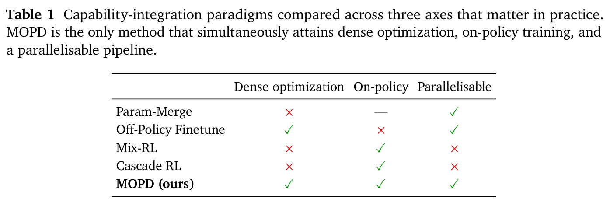
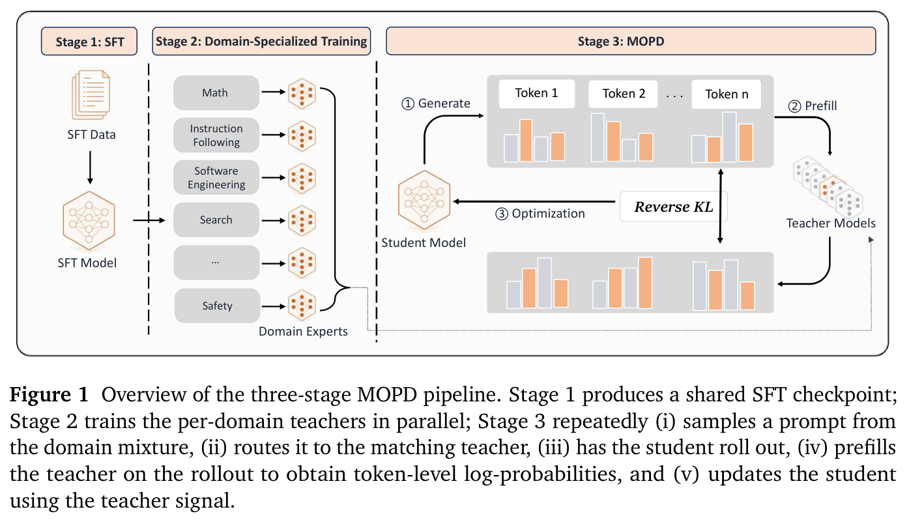
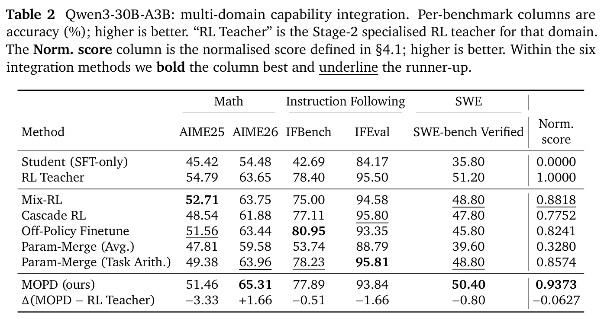
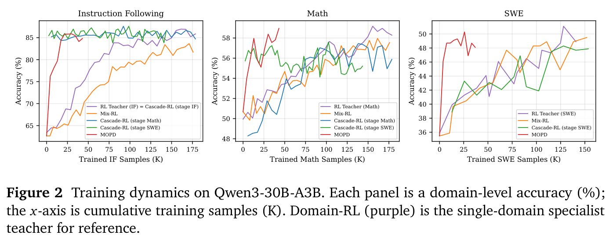
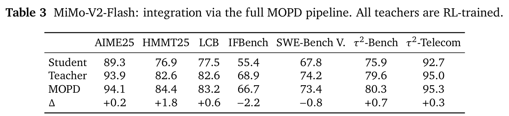
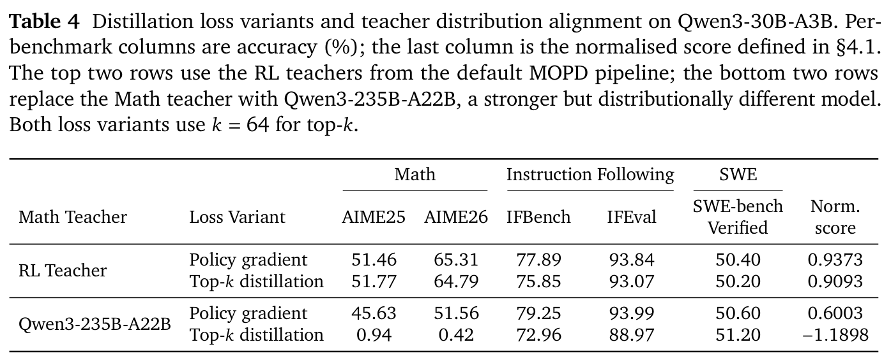
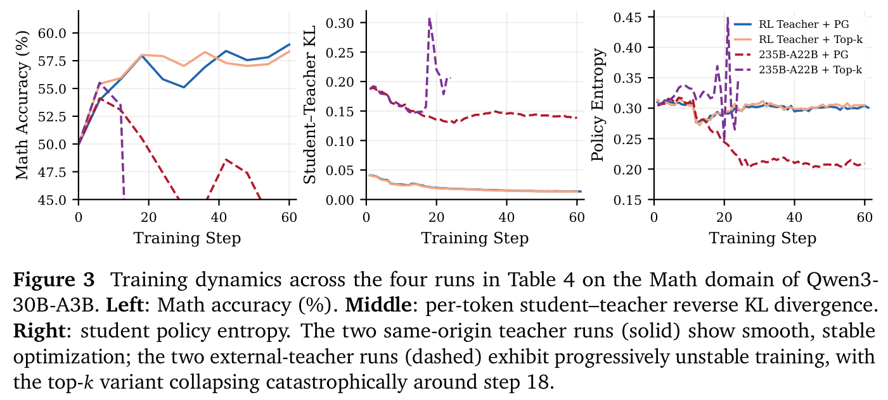
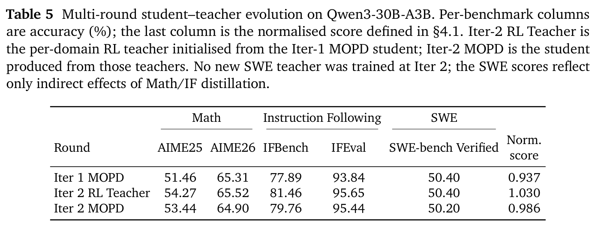

MOPD：用于 LLM 后训练能力整合的多教师 on-policy 蒸馏
Wenhan Ma1,2*、Jianyu Wei2、Liang Zhao2、Hailin Zhang2、Bangjun Xiao1,2、Lei Li2,3、Qibin Yang1,2、Bofei Gao1,2、Yudong Wang1,2、Rang Li1,2、Jinhao Dong4,2、Zhifang Sui1†、Fuli Luo2†
1北京大学 2小米 LLM Core 3香港大学 4中国人民大学
摘要
现代大型语言模型（LLM）依赖后训练中的强化学习来提升特定能力，但将多种能力整合进单个模型仍然困难。Off-Policy Finetune 和 Mix-RL 等现有方法要么效率低下，要么损失性能。本文提出多教师 on-policy 蒸馏（Multi-teacher On-Policy Distillation，MOPD），这是一种将多个领域 RL 教师的能力结合起来的后训练范式：首先，分别对各领域运行专门的 RL，获得一组领域教师；随后，在学生自身的 rollout 上，将这些教师蒸馏到学生中。这消除了暴露偏差，并提供密集的优化信号。在 Qwen3-30B-A3B 上，MOPD 优于 Mix-RL、级联 RL、Off-Policy Finetune 和 Param-Merge 基线，继承了每个教师几乎全部的能力。MOPD 还支持并行、独立地开发领域教师，消除了多领域后训练通常存在的跨领域耦合。MOPD 已部署于工业规模前沿模型 MiMo-V2-Flash 的后训练中，证明了它在前沿规模 LLM 能力整合中的实际价值。
1 引言
强化学习（RL）已成为提高大型语言模型（LLM）能力的重要方法（Ouyang et al., 2022; Schulman et al., 2017; Shao et al., 2024）。不同任务领域依赖不同的 RL 流程。数学推理如今使用答案可验证的 RL 进行训练（Guo et al., 2025; Shao et al., 2024）；软件工程使用可执行沙箱中的 agent 式 RL（Jain et al., 2025; Wei et al., 2025）；指令遵循和创意写作使用基于评分准则的 RL（Ouyang et al., 2022）；面向搜索的 agent 则使用 Web 环境 RL（Jin et al., 2025; Nakano et al., 2022）。每种流程都能可靠地提升模型在目标领域的能力。然而，我们最终希望得到一个在所有这些领域都有良好表现的单一模型。但在现代 LLM 后训练中，构建这样的模型仍是一个尚未解决的问题。
此前解决这一能力整合问题的方法可分为四类（表 1）。（1）Mix-RL（Yang et al., 2025）将所有领域的 prompt 汇集到一个数据集中并进行联合 RL，但跨领域训练信号相互干扰，产生跷跷板效应（Standley et al., 2020），（接下页）
*本工作完成于在小米实习期间。†共同通讯作者。

（接上页）使联合模型的表现低于各领域教师。（2）级联 RL（Wang et al., 2026）依次训练不同领域，因此随着后续阶段推进，早期阶段的能力可能衰退，而且较长的整体训练过程会放大稳定性风险。（3）Off-Policy Finetune（Liu et al., 2025）先训练各领域的 RL 教师，再通过 SFT 在教师的 rollout 上微调学生；这种 off-policy 监督会引入典型的暴露偏差（Ranzato et al., 2016）。（4）Param-Merge（Ilharco et al., 2023; Wortsman et al., 2022）平均教师权重，或在权重空间中组合任务向量，但融合后的模型通常不稳定，无法达到所有教师的完整能力。总之，这些方法在学习效率、可达到的性能上限和训练稳定性之间相互取舍，没有令人满意的折中方案。
为克服这些局限，我们提出多教师 on-policy 蒸馏（MOPD），一种直接在策略空间中进行多教师能力整合，而非在权重空间或静态数据集空间中进行整合的后训练范式。MOPD 首先独立地在每个领域开展专门的 RL，获得一组强大的领域教师。随后，通过 on-policy 蒸馏（Agarwal et al., 2024; Gu et al., 2026; Hinton et al., 2015）将这些教师的能力蒸馏到单一学生模型中。这一设计具有三项结构性优势：（1）训练信号密集，且直接来自每个专门教师，因此学生能够继承每个教师的大部分能力；（2）训练完全在学生自身的 rollout 分布上运行，从设计上消除暴露偏差；（3）通过逐 prompt 路由在策略空间中实现能力整合，而非进行权重空间融合，从而使过程显著更加稳定。
我们在两个规模和架构不同的基础模型上对 MOPD 进行实证验证。在 Qwen3-30B-A3B（Yang et al., 2025）上，我们在三个领域——数学、指令遵循和软件工程（Jimenez et al., 2024; OpenAI, 2024）——比较 Mix-RL、级联 RL、Off-Policy Finetune、Param-Merge 和 MOPD；MOPD 的归一化得分领先最强基线 5.5 个百分点（0.937 对 0.882）。我们进一步将 MOPD 部署到工业规模模型 MiMo-V2-Flash（Team et al., 2026）上，展示它在前沿规模场景中的实际有效性。进一步分析验证了 Top-\(k\) 蒸馏实现，确认同源教师对稳定优化至关重要，并展示了多轮迭代改进的优势。
我们的贡献概括如下。（i）提出 MOPD，一种通过在学生自身 rollout 上提供密集、token 级监督，实现多教师能力整合的后训练范式。（ii）在 Qwen3-30B-A3B 上验证 MOPD，证明它优于现有能力整合基线，并进一步应用到工业规模的 MiMo-V2-Flash，以确认实际可行性。
2 相关工作
用于 LLM 的强化学习。在具有可验证奖励的强化学习（RLVR）中，PPO 式（Schulman et al., 2017）和 GRPO 式（Shao et al., 2024）的结果奖励优化已成为标准实践。这些 RL 流程覆盖多样的任务，包括数学推理（Guo et al., 2025; Shao et al., 2024）、软件工程（Jain et al., 2025; Wei et al., 2025）、指令遵循与创意写作（Ouyang et al., 2022），以及搜索 agent（Jin et al., 2025; Nakano et al., 2022）。每种流程都产生一个强大的领域专家，而将这些专家整合进单一模型，自然会引出多领域／多任务的问题。针对这一场景，以往工作主要采用两条路径：混合 RL（Yang et al., 2025）将不同领域的样本放入同一训练 batch 中（每个样本仍使用自身领域的奖励和 advantage）；级联 RL（Wang et al., 2026）则依次训练各个领域。
用于 LLM 的蒸馏。经典蒸馏（Hinton et al., 2015; Kim and Rush, 2016）在固定的教师补全语料上最小化正向 KL，因此属于 off-policy 方法，学生在推理时的轨迹可能偏离训练分布。on-policy 蒸馏通过在学生自身的 rollout 上训练、以教师作为评分信号来解决这一问题，例如 MiniLLM（Gu et al., 2026）（反向 KL）和以教师作为奖励的变体（Agarwal et al., 2024; Meng et al., 2024）。不过，它仅限于单一教师和单一领域。MOPD 保留“学生采样、教师评分”这一模板，将其扩展到多个按 prompt 路由的领域教师，并在生产规模基础模型上进行验证。
模型合并。模型合并在权重空间中融合多个模型 checkpoint，无需额外训练即可得到组合模型。Model Soups（Wortsman et al., 2022）对从相同初始化出发、独立微调的模型权重进行平均。任务算术（Ilharco et al., 2023）通过在权重空间中加减任务向量来组合能力，后续工作则通过 TIES-Merging（Yadav et al., 2023）、DARE（Yu et al., 2024）和 AdaMerging（Yang et al., 2024）缓解参数冲突。
3 方法
3.1 流程
MOPD 将后训练组织为三个顺序阶段：通用 SFT、领域专门 RL 训练，以及最终将各领域专家融合为单一模型的 MOPD 阶段（图 1）。
- 阶段 1：通用 SFT。我们首先在覆盖所有关注的基础能力的广泛语料上微调基础模型，得到一个 SFT checkpoint。该 checkpoint 作为阶段 2 中领域专门 RL 训练的共享初始化，同时也用于初始化阶段 3 的 MOPD 学生。
- 阶段 2：领域专门 RL 训练。在这一阶段，对于每个领域 \(d\)，从阶段 1 的 checkpoint 出发训练领域专家 \(\pi_{\phi_d}\)。每个专家使用最适合其领域的 RL 配方训练，例如数学使用答案可验证的 RL，软件工程使用可执行沙箱中的 agent RL。各领域训练相互独立，可以完全并行执行。
- 阶段 3：MOPD。学生从阶段 1 的 SFT checkpoint 初始化，阶段 2 的领域专家 \(\{\pi_{\phi_d}\}\) 被冻结并组成教师组；随后在多领域数据集上训练学生，每个优化步骤执行以下操作：（接下页）

（接上页）（1）从数据集中采样一个 prompt batch；（2）学生为每个 prompt 生成轨迹，并记录沿轨迹的逐 token 概率分布；（3）根据任务所属领域，将每条轨迹分派给相应的领域教师，然后教师对轨迹进行 prefill，得到其逐 token 概率分布；（4）通过最小化轨迹上学生与领域教师之间的逐 token 反向 KL 来更新学生。训练后，阶段 3 得到一个已获得所有领域能力的统一模型。
与现有能力整合范式相比，MOPD 具有多项结构性优势：
- 无暴露偏差。学生在自己的 rollout 上训练，因此训练与推理的状态分布从设计上保持一致。
- 密集的逐 token 监督。教师在轨迹的每个 token 上提供概率分布。这比标准 RL 中的轨迹级奖励密集得多，能够降低方差并提高样本效率。
- 策略空间中的稳定整合。通过将每个 prompt 路由到匹配的教师来合并能力，而非对教师参数进行平均或任务算术。这避免了权重空间融合常见的不稳定性。
- 模块化、并行的教师。教师 RL 训练完全并行运行，每个教师可以使用自己的超参数配置。一个教师的 RL 训练发生意外失败或超参数调整，不会影响其他教师的训练。
- 同源教师的稳定性。每个教师都是从用于初始化学生的同一个 SFT checkpoint 出发，通过领域专门 RL 训练得到的，因此教师与学生共享高度一致的策略分布。这保证较低的初始 KL 散度，以及整个蒸馏过程平滑、稳定的优化（§4.4.2）。
3.2 算法
在阶段 3 中，通过朝向所分派教师的逐 token 反向 KL 来优化学生：
其中，\(\pi_{\phi_d}\) 是分派给 prompt \(x\) 的教师，\(\pi_\theta(v)\)、\(\pi_{\phi_d}(v)\) 分别是 \(\pi_\theta(v\mid x,y_{<t})\)、\(\pi_{\phi_d}(v\mid x,y_{<t})\) 的简写（下文使用相同简写）。下面两小节给出这一目标的两种高效实现。
3.2.1 策略 gradient 实现
遵循 MiniLLM（Gu et al., 2026），我们将 MOPD 蒸馏表述为一个 RL 过程。式（1）的 gradient 为
这恰好是策略 gradient 的形式，其中教师与学生的 log 概率之差充当逐 token advantage：
为保证训练稳定性，我们对 advantage 进行双侧裁剪，\(\hat A^{\mathrm{clip}}_{\mathrm{MOPD},t}=\operatorname{clip}(\hat A_{\mathrm{MOPD},t},-A_{\max},+A_{\max})\)，得到最终损失
这种形式可直接接入现有 PPO/GRPO 训练框架；唯一需要改变的是 advantage 的计算。
3.2.2 Top-\(k\) 蒸馏实现
策略 gradient 形式仅使用每个 rollout 位置上采样到的单个 token。一种方差更低的替代方案是在教师的 Top-\(k\) token 上进行蒸馏（Peng et al., 2024），在保持实现简单的同时，更充分地利用教师分布。令 \(\mathcal T_t^d=\operatorname{TopK}_k(\pi_{\phi_d}(\cdot\mid x,y_{<t}))\) 表示教师在位置 \(t\) 的 Top-\(k\) token 集合。我们使用以下蒸馏损失：
其中，\(\pi_\theta(v)\) 和 \(\pi_{\phi_d}(v)\) 都以 \((x,y_{<t})\) 为条件；为简洁起见，省略这一条件。
在标准反向 KL 之外，我们额外添加了 \(\pi_{\phi_d}(v)-\pi_\theta(v)\) 项。这一项修正 Top-\(k\) 截断引入的偏差，保证损失在 Top-\(k\) token 上于 \(\pi_\theta=\pi_{\phi_d}\) 时最小；如果不加入它，朴素的 Top-\(k\) 截断反向 KL 不具备这一性质。
除了正确性，Top-\(k\) 形式还减轻了基础设施负担：它让教师 prefill 返回的数据量足够小，可以像轻量奖励信号一样传输；相比之下，全词表蒸馏需要为每个 token 传输整个词表分布。
3.3 基础设施
阶段 3 中额外的操作是教师 prefill：每条学生 rollout 都必须经过所分派的教师，以获得逐 token log 概率（或 Top-\(k\) logits）。一种自然的（接下页）
（接上页）基线是将教师 prefill 合并到 RL 训练循环中，但这会使基础设施复杂化，并增加额外的串行延迟。我们观察到，教师 prefill 计算与 RL 中的奖励计算具有相同性质，因此将每个领域教师部署为位于 RL trainer 之外的独立 prefill 服务。
运行时工作方式如下。学生采样器持续生成 rollout；一旦某个序列的 rollout 完成，trainer 就向对应的教师服务发起异步 prefill 请求。教师服务计算并返回逐 token log 概率。由于教师 prefill 与其他序列的采样在时间上重叠，MOPD 的实际耗时主要由采样决定，教师成本基本被隐藏在学生采样期间。在我们的部署中，教师几乎没有带来可测量的额外耗时。
4 实验
我们在受控条件下，在 Qwen3-30B-A3B 上将 MOPD 与四种能力整合范式比较（§4.1–4.2），并在工业规模前沿模型 MiMo-V2-Flash 上验证（§4.3）。最后，§4.4 给出我们的分析。
4.1 实验设置
SFT 模型。我们的起始 checkpoint 是 Qwen3-30B-A3B-Base（Yang et al., 2025）。为了使其成为 RL 的强大起点，我们在覆盖所有目标领域的广泛语料上进行微调。所有基线和 MOPD 都从同一 SFT checkpoint 出发。
任务与评估。任务涵盖三个领域：数学（在 AIME25 和 AIME26 上评估）、指令遵循（在 IFBench（Pyatkin et al., 2025）和 IFEval（Zhou et al., 2023）上评估）以及软件工程（在 SWE-bench Verified（Jimenez et al., 2024）上评估）。训练数据来源与超参数见附录 A。
基线。我们比较五种能力整合范式：（i）Mix-RL，在汇集所有领域 prompt 的数据集上进行联合 RL；（ii）级联 RL，依次对各领域进行 RL，每一阶段从前一阶段初始化；（iii）Off-Policy Finetune，在阶段 2 教师生成的 rollout 上对学生进行离线 SFT；（iv）Param-Merge，对阶段 2 教师进行线性／任务算术合并；（v）MOPD（我们的方法）。
评估指标。三个领域的绝对提升空间存在明显差异，因此直接平均准确率会使提升空间较大的领域权重过高。为将领域放在共同尺度上，我们报告归一化得分。令 \(\mathcal D\) 表示评估领域集合。对于每个 \(d\in\mathcal D\)，令 \(s_d^{\mathrm s}\) 为阶段 1 的 SFT 学生在该领域上的准确率，\(s_d^{\mathrm t}\) 为对应阶段 2 的领域专家准确率；对于领域准确率为 \(s_d\) 的方法，其逐领域归一化得分为 \(\tilde s_d=(s_d-s_d^{\mathrm s})/(s_d^{\mathrm t}-s_d^{\mathrm s})\)，它在阶段 1 学生处等于 0，在领域专家教师处等于 1。我们报告的主要数值是跨领域的等权平均 \(\bar{\tilde s}=\frac1{|\mathcal D|}\sum_{d\in\mathcal D}\tilde s_d\)；大于 1 表示超越专家教师，小于 0 表示相对于阶段 1 学生出现退化。
4.2 主要结果
表 2 报告三个领域各基准的准确率和归一化得分。图 2 跟踪领域级准确率随逐领域训练样本数的变化。我们得到四点观察。


- Mix-RL、级联 RL 和 Off-Policy Finetune 各自留下不同形态的领域能力差距。三种方法分别达到 0.882、0.775 和 0.824 的归一化得分，总体相近，但逐领域弱项各不相同。级联 RL（按 IF→Math→SWE 顺序训练）表现出跨领域干扰：最先训练的 IF 领域填补了 98% 的提升空间，但 Math（第二阶段）仅填补 57%；图 2 进一步表明，Math 准确率在随后的 SWE 阶段下降。Off-Policy Finetune 在 IF 上超越教师（逐领域归一化得分 1.01），但在 SWE 上仅填补 65%，这表明离线模仿教师轨迹在不同任务类型间的迁移并不均衡。Mix-RL 是最均衡的基线（逐领域极差 0.064），但总体仍落后 MOPD 5.5 个百分点。
- MOPD 以最均匀的能力分布取得最高归一化得分。MOPD 达到 0.937 的归一化得分，比次优方法（Mix-RL，0.882）高 0.055。它的三个逐领域归一化得分落在 [0.91, 0.95] 内，极差仅 0.044，是所有方法中最小的。没有其他方法能够如此均匀地填补提升空间：级联 RL 跨越 0.57–0.98（极差 0.41），Off-Policy Finetune 跨越 0.65–1.01（极差 0.36）。
- Param-Merge 对合并配方高度敏感。线性平均普遍失败（接下页）

（接上页）（归一化得分 0.328）；任务算术恢复到 0.857，但其逐领域表现差异很大：它在 IF 上超越教师（1.00），而在 Math 上仅填补 73%。结果同时依赖合并系数和基准，使参数合并成为一种不可靠的整合工具。
- MOPD 的样本效率显著更高。如图 2 所示（横轴：各领域消耗的样本数），MOPD 在约 25K 个 IF 样本内便在 IF 上达到教师水平的平台，在约 30K 个 SWE 样本内便在 SWE 上达到该平台；而 Mix-RL 需要在每个领域使用完整的 150–180K 样本预算，才能接近相当水平。教师提供的密集逐 token 监督，比轨迹级 RL 奖励为每个样本提供更丰富的 gradient 信号，因此收敛更快。
4.3 扩展到 309B 参数模型
为确认 MOPD 可推广到工业规模前沿模型，我们将完整三阶段流程应用到 MiMo-V2-Flash。领域教师覆盖 Math、Code、IF、SWE 和 Tool Use。
表 3 给出 MiMo-V2-Flash 上的 MOPD 结果。在大多数基准上，MOPD 达到或超过相应教师。两项退化，即 IFBench（−2.2）和 SWE-Bench Verified（−0.8），相对于其他基准上的收益较小。
4.4 分析
4.4.1 策略 gradient 与 Top-\(k\) 蒸馏表现相当
§3.2 引入了 MOPD 蒸馏损失的两种实现：策略 gradient 形式（4）和 Top-\(k\) 形式（5）。我们在 Qwen3-30B-A3B 上、其他流程完全相同的条件下比较二者（教师、数据预算和超参数相同），Top-\(k\) 变体采用 \(k=64\)。
表 4 的前两行报告这一比较。Top-\(k\) 蒸馏在 Math 上表现相当，在 IF 和 SWE 上略差；两种形式总体能力相近，归一化得分分别为 0.909 和 0.937。图 3 印证了这一点：在同源教师条件下，两种损失形式产生几乎重叠的训练轨迹：数学准确率平滑上升，逐 token 反向 KL 从已经很低的初始值（约 0.04）单调下降，策略熵在整个过程中保持在约 0.30。当教师与学生共享高度相关的分布时，学生的 rollout 集中在教师的高概率区域，因此两种 gradient 估计器获得相似的有效信号，收敛到相当的终点。这表明，在同源教师条件下，策略 gradient 形式已经足够稳定；引入 Top-\(k\) 不会带来额外的稳定性或方差降低。


4.4.2 同源教师使蒸馏更稳定
MOPD 的领域教师是从学生出发，通过 RL 训练得到的。这意味着教师与学生共享相似的策略分布。近期研究（Ko et al., 2026; Li et al., 2026）讨论了教师与学生的策略散度和 on-policy 蒸馏稳定性之间的关系。一个自然的问题是：用能力更强但分布不同的外部模型替换某个教师，是否会得到更好的结果？为检验这一点，我们设计了一个受控实验：在 MOPD 的 Math 领域，将原来的 Qwen3-30B-A3B Math RL 教师替换为 Qwen3-235B-A22B，后者规模显著更大、数学能力更强。其他所有设置（IF 与 SWE 教师、数据、超参数）保持不变。
表 4 的后两行报告结果。虽然 Qwen3-235B-A22B 的绝对数学能力明显更强，但在两种损失变体下，MOPD 学生的 Math 表现都退化。图 3 揭示了机制。初始逐 token KL 约为同源设置的 5 倍（约 0.19 对约 0.04），从量上确认了较大的分布差距。在策略 gradient 形式下，数学准确率逐步下降，熵从 0.30 收缩到 0.21；学生主要从教师的低概率区域接收到惩罚性的 gradient 信号，因而策略向单一模式收窄。在 Top-\(k\) 形式下，崩溃更加严重：训练在约第 18 步灾难性地发散，（接下页）

（接上页）KL 与熵都剧烈振荡，表明优化稳定性完全丧失。这些结果强调，MOPD 使用同源教师至关重要：紧密的分布对齐保证整个训练过程的稳定优化，从而带来可靠、一致的收益。
4.4.3 多轮学生—教师演进
单轮 MOPD 填补了每个领域中学生与教师之间的大部分提升空间，但表 5 显示 Math 和 IF 领域仍有提升空间。我们提出将 MOPD 后的模型作为新学生并重复这一过程：从该学生重新训练每个领域教师，然后使用新教师再进行一次 MOPD 整合。
我们在 Qwen3-30B-A3B 上验证这样一轮后续训练。第一轮后，学生成为下一轮各领域 RL 教师的初始化，这些教师推动第二次 MOPD。在这一轮中，仅对 Math 和 IF 领域进行 RL 训练与 MOPD 蒸馏（对于 SWE，既不进行 RL 训练，也不进行蒸馏）。
我们观察到：（i）从第 1 轮学生初始化下一轮领域 RL，确实产生了更强的教师：第 2 轮 RL 教师的归一化得分达到 1.030，比第 1 轮 MOPD 高 0.093；这确认了单轮 MOPD 提取的能力之外，各领域仍有提升空间。（ii）在第 2 轮 RL 教师指导下，第 2 轮学生在 Math 和 IF 上进一步提升，归一化得分从 0.937 上升到 0.986（+0.049），表明 MOPD 流程可以持续吸收更强教师的能力。
5 讨论
除实证收益外，MOPD 从结构上解耦多领域后训练固有的串行依赖，将能力生产（阶段 2 的逐领域 RL）与能力整合（阶段 3 的蒸馏）分开。这带来三项工作流程上的影响：
- 并行开发。阶段 2 教师相互独立：各领域团队同时迭代各自的奖励、沙箱和数据流程，不存在固定顺序。在计算资源充足的情况下，这会直接提高团队整体开发吞吐量。
- 配方级解耦。各领域可以自由选择自己的 RL 配方（算法、rollout 过程、奖励函数、超参数等），无需担心与其他领域冲突，也无需担心自己的优化选择干扰其他领域。
- 风险隔离。RL 训练通常需要迭代调整算法和超参数（无论是为了进一步提升能力，还是仅为解决稳定性问题），而每次这样的（接下页）
（接上页）调整都会迫使训练重新开始。在联合多领域 RL 中，一次重启会让整个训练回到起点；在 MOPD 的并行教师开发中，重启仅限于受影响的单个领域，其他教师可不受干扰地继续训练。
6 结论
我们提出 MOPD（Multi-Teacher On-Policy Distillation，多教师 on-policy 蒸馏），一种在策略空间中进行多领域能力整合的后训练范式：学生从自身的 rollout 中采样，每个 prompt 被路由到相应的冻结领域教师，教师在每个位置提供密集、token 级的 log 概率信号。在 Qwen3-30B-A3B 上，MOPD 在 Mix-RL、级联 RL、Off-Policy Finetune 和 Param-Merge 之间取得最佳整体整合效果，归一化得分领先次优整合方法 5.5 个百分点，同时在每个领域填补学生与教师间 91–95% 的提升空间；在 MiMo-V2-Flash 上，相同配方在大多数基准上达到或超过相应教师。我们的分析进一步表明，策略 gradient 与 Top-\(k\) 损失形式表现相当，同源教师对于稳定优化至关重要，且该流程支持多轮学生—教师演进。结合 §5 讨论的结构性解耦，我们认为 MOPD 为大规模 LLM 后训练提供了一条支持并行开发与快速整合的工程路径。
参考文献
Rishabh Agarwal, Nino Vieillard, Yongchao Zhou, Piotr Stanczyk, Sabela Ramos, Matthieu Geist, and Olivier Bachem. 2024. 语言模型的 on-policy 蒸馏：从自生成的错误中学习。预印本， arXiv:2306.13649.
Alon Albalak, Duy Phung, Nathan Lile, Rafael Rafailov, Kanishk Gandhi, Louis Castricato, Anikait Singh, Chase Blagden, Violet Xiang, Dakota Mahan, and Nick Haber. 2025. Big-math：用于语言模型强化学习的大规模高质量数学数据集。预印本， arXiv:2502.17387.
Yuxian Gu, Li Dong, Furu Wei, and Minlie Huang. 2026. MiniLLM：大型语言模型的 on-policy 蒸馏。预印本， arXiv:2306.08543.
Daya Guo, Dejian Yang, Haowei Zhang, Junxiao Song, Peiyi Wang, Qihao Zhu, Runxin Xu, Ruoyu Zhang, Shirong Ma, Xiao Bi, Xiaokang Zhang, Xingkai Yu, Yu Wu, Z. F. Wu, Zhibin Gou, Zhihong Shao, Zhuoshu Li, Ziyi Gao, Aixin Liu, and 175 others. 2025. DeepSeek-R1 通过强化学习激励 LLM 的推理。Nature, 645(8081):633–638.
Geoffrey Hinton, Oriol Vinyals, and Jeff Dean. 2015. 蒸馏神经网络中的知识。预印本， arXiv:1503.02531.
Jingcheng Hu, Yinmin Zhang, Qi Han, Daxin Jiang, Xiangyu Zhang, and Heung-Yeung Shum. 2025. Open-reasoner-zero：在基础模型上扩展强化学习的开源方法。预印本， arXiv:2503.24290.
Hugging Face. 2025. Open R1：完全开放的 DeepSeek-R1 复现。https://github.com/huggingface/open-r1。Mixture-of-Thoughts 数据集位于 https://huggingface.co/datasets/open-r1/Mixture-of-Thoughts。
Gabriel Ilharco, Marco Tulio Ribeiro, Mitchell Wortsman, Suchin Gururangan, Ludwig Schmidt, Hannaneh Hajishirzi, and Ali Farhadi. 2023. 通过任务算术编辑模型。预印本， arXiv:2212.04089.
参考文献（续）
Naman Jain, Jaskirat Singh, Manish Shetty, Liang Zheng, Koushik Sen, and Ion Stoica. 2025. R2e-gym：用于扩展开源权重 SWE agent 的程序化环境与混合验证器。预印本， arXiv:2504.07164.
Carlos E. Jimenez, John Yang, Alexander Wettig, Shunyu Yao, Kexin Pei, Ofir Press, and Karthik Narasimhan. 2024. Swe-bench：语言模型能解决真实世界的 GitHub issue 吗？。预印本， arXiv:2310.06770.
Bowen Jin, Hansi Zeng, Zhenrui Yue, Jinsung Yoon, Sercan Arik, Dong Wang, Hamed Zamani, and Jiawei Han. 2025. Search-r1：通过强化学习训练 LLM 进行推理并使用搜索引擎。预印本， arXiv:2503.09516.
Yoon Kim and Alexander M. Rush. 2016. 序列级知识蒸馏。预印本， arXiv:1606.07947.
Jongwoo Ko, Sara Abdali, Young Jin Kim, Tianyi Chen, and Pashmina Cameron. 2026. 通过放宽的 on-policy 蒸馏高效扩展推理。预印本， arXiv:2603.11137.
Yaxuan Li, Yuxin Zuo, Bingxiang He, Jinqian Zhang, Chaojun Xiao, Cheng Qian, Tianyu Yu, Huan ang Gao, Wenkai Yang, Zhiyuan Liu, and Ning Ding. 2026. 重新思考大型语言模型的 on-policy 蒸馏：现象、机制与配方。预印本， arXiv:2604.13016.
Aixin Liu, Aoxue Mei, Bangcai Lin, Bing Xue, Bingxuan Wang, Bingzheng Xu, Bochao Wu, Bowei Zhang, Chaofan Lin, Chen Dong, Chengda Lu, Chenggang Zhao, Chengqi Deng, Chenhao Xu, Chong Ruan, Damai Dai, Daya Guo, Dejian Yang, Deli Chen, and 244 others. 2025. DeepSeek-v3.2：推进开放大型语言模型的前沿。预印本， arXiv:2512.02556.
Yu Meng, Mengzhou Xia, and Danqi Chen. 2024. SimPO：使用无参考模型奖励的简单偏好优化。预印本， arXiv:2405.14734.
Reiichiro Nakano, Jacob Hilton, Suchir Balaji, Jeff Wu, Long Ouyang, Christina Kim, Christopher Hesse, Shantanu Jain, Vineet Kosaraju, William Saunders, Xu Jiang, Karl Cobbe, Tyna Eloundou, Gretchen Krueger, Kevin Button, Matthew Knight, Benjamin Chess, and John Schulman. 2022. WebGPT：利用人类反馈的浏览器辅助问答。预印本， arXiv:2112.09332.
OpenAI, :, Sandhini Agarwal, Lama Ahmad, Jason Ai, Sam Altman, Andy Applebaum, Edwin Arbus, Rahul K. Arora, Yu Bai, Bowen Baker, Haiming Bao, Boaz Barak, Ally Bennett, Tyler Bertao, Nivedita Brett, Eugene Brevdo, Greg Brockman, Sebastien Bubeck, and 108 others. 2025. gpt-oss-120b 与 gpt-oss-20b 模型卡。预印本， arXiv:2508.10925.
OpenAI. 2024. SWE-bench Verified 介绍。https://openai.com/index/introducing-swe-bench-verified/。
Long Ouyang, Jeff Wu, Xu Jiang, Diogo Almeida, Carroll L. Wainwright, Pamela Mishkin, Chong Zhang, Sandhini Agarwal, Katarina Slama, Alex Ray, John Schulman, Jacob Hilton, Fraser Kelton, Luke Miller, Maddie Simens, Amanda Askell, Peter Welinder, Paul Christiano, Jan Leike, and Ryan Lowe. 2022. 训练语言模型利用人类反馈遵循指令。预印本， arXiv:2203.02155.
Hao Peng, Xin Lv, Yushi Bai, Zijun Yao, Jiajie Zhang, Lei Hou, and Juanzi Li. 2024. 大型语言模型的预训练蒸馏：设计空间探索。预印本， arXiv:2410.16215.
参考文献（续）
Valentina Pyatkin, Saumya Malik, Victoria Graf, Hamish Ivison, Shengyi Huang, Pradeep Dasigi, Nathan Lambert, and Hannaneh Hajishirzi. 2025. 可验证指令遵循的泛化。预印本， arXiv:2507.02833.
Marc’Aurelio Ranzato, Sumit Chopra, Michael Auli, and Wojciech Zaremba. 2016. 使用循环神经网络进行序列级训练。预印本， arXiv:1511.06732.
John Schulman, Filip Wolski, Prafulla Dhariwal, Alec Radford, and Oleg Klimov. 2017. 近端策略优化算法。预印本， arXiv:1707.06347.
Zhihong Shao, Peiyi Wang, Qihao Zhu, Runxin Xu, Junxiao Song, Xiao Bi, Haowei Zhang, Mingchuan Zhang, Y. K. Li, Y. Wu, and Daya Guo. 2024. DeepSeekMath：推进开放语言模型数学推理的极限。预印本， arXiv:2402.03300.
Trevor Standley, Amir R. Zamir, Dawn Chen, Leonidas Guibas, Jitendra Malik, and Silvio Savarese. 2020. 多任务学习中哪些任务应该一起学习？。预印本， arXiv:1905.07553.
Core Team, Bangjun Xiao, Bingquan Xia, Bo Yang, Bofei Gao, Bowen Shen, Chen Zhang, Chenhong He, Chiheng Lou, Fuli Luo, Gang Wang, Gang Xie, Hailin Zhang, Hanglong Lv, Hanyu Li, Heyu Chen, Hongshen Xu, Houbin Zhang, Huaqiu Liu, and 107 others. 2026. MiMo-v2-flash 技术报告。预印本， arXiv:2601.02780.
Boxin Wang, Chankyu Lee, Nayeon Lee, Sheng-Chieh Lin, Wenliang Dai, Yang Chen, Yangyi Chen, Zhuolin Yang, Zihan Liu, Mohammad Shoeybi, Bryan Catanzaro, and Wei Ping. 2026. Nemotron-cascade：为通用推理模型扩展级联强化学习。预印本， arXiv:2512.13607.
Yuxiang Wei, Olivier Duchenne, Jade Copet, Quentin Carbonneaux, Lingming Zhang, Daniel Fried, Gabriel Synnaeve, Rishabh Singh, and Sida I. Wang. 2025. SWE-RL：通过开放软件演化上的强化学习推进 LLM 推理。预印本， arXiv:2502.18449.
Mitchell Wortsman, Gabriel Ilharco, Samir Yitzhak Gadre, Rebecca Roelofs, Raphael Gontijo-Lopes, Ari S. Morcos, Hongseok Namkoong, Ali Farhadi, Yair Carmon, Simon Kornblith, and Ludwig Schmidt. 2022. Model soups：平均多个微调模型的权重，在不增加推理时间的情况下提高准确率。预印本， arXiv:2203.05482.
Prateek Yadav, Derek Tam, Leshem Choshen, Colin Raffel, and Mohit Bansal. 2023. TIES-merging：解决合并模型时的干扰。预印本， arXiv:2306.01708.
An Yang, Anfeng Li, Baosong Yang, Beichen Zhang, Binyuan Hui, Bo Zheng, Bowen Yu, Chang Gao, Chengen Huang, Chenxu Lv, Chujie Zheng, Dayiheng Liu, Fan Zhou, Fei Huang, Feng Hu, Hao Ge, Haoran Wei, Huan Lin, Jialong Tang, and 41 others. 2025. Qwen3 技术报告。预印本， arXiv:2505.09388.
Enneng Yang, Zhenyi Wang, Li Shen, Shiwei Liu, Guibing Guo, Xingwei Wang, and Dacheng Tao. 2024. AdaMerging：用于多任务学习的自适应模型合并。预印本， arXiv:2310.02575.
Le Yu, Bowen Yu, Haiyang Yu, Fei Huang, and Yongbin Li. 2024. 语言模型是超级马里奥：免费吸收同源模型的能力。预印本， arXiv:2311.03099.
Qiying Yu, Zheng Zhang, Ruofei Zhu, Yufeng Yuan, Xiaochen Zuo, Yu Yue, Weinan Dai, Tiantian Fan, Gaohong Liu, Lingjun Liu, Xin Liu, Haibin Lin, Zhiqi Lin, Bole Ma, Guangming Sheng,（接下页）
参考文献（续）
Yuxuan Tong, Chi Zhang, Mofan Zhang, Wang Zhang, and 16 others. 2025. DAPO：大规模开源 LLM 强化学习系统。预印本， arXiv:2503.14476.
Jeffrey Zhou, Tianjian Lu, Swaroop Mishra, Siddhartha Brahma, Sujoy Basu, Yi Luan, Denny Zhou, and Le Hou. 2023. 大型语言模型的指令遵循评估。预印本， arXiv:2311.07911.
A 训练细节
训练数据。我们的训练任务涵盖三个领域：
- 数学。SFT 数据主要来自 Mixture-of-Thoughts 数据集的数学子集（Hugging Face, 2025）；RL 训练数据从许多开源数据集中收集并筛选，包括 BigMath（Albalak et al., 2025）和 ORZ（Hu et al., 2025）。最大序列长度为 32,768。
- 指令遵循。SFT prompt 按 IFBench（Pyatkin et al., 2025）介绍的方法构造，并在 gpt-oss-120b（OpenAI et al., 2025）上蒸馏；RL 训练数据同样遵循 IFBench 配方合成。最大序列长度为 32,768。
- 软件工程。SFT 数据通过开源模型从 R2E-Gym 任务中蒸馏得到；RL 训练数据使用 R2E-Gym-Lite（Jain et al., 2025）。最大序列长度为 65,536，交互轮数上限为 50。
超参数。RL 训练使用带动态采样（Yu et al., 2025）的 on-policy GRPO（Shao et al., 2024）算法：每次 rollout 生成的数据仅用于一次 gradient 更新，随后丢弃。逐领域 RL 的学习率设为 \(3\times10^{-6}\)。对于 Math 和 IF 训练，batch 大小（BS）设为 144，每个 prompt 生成 \(N=8\) 条 rollout，训练约 175K 个序列。对于 SWE，BS 设为 80，\(N=8\)，训练约 150K 个序列。级联 RL 使用与逐领域 RL 相同的配置，领域训练顺序为 IF→Math→SWE。对于 Mix-RL，学习率设为 \(4\times10^{-6}\)，BS 为 256，\(N=8\)，每个 batch 中的领域比例为 Math : IF : SWE = 0.35 : 0.35 : 0.3。对于 MOPD，不使用动态采样，BS 设为 2048，\(N=1\)，每个 batch 中的领域比例为 Math : IF : SWE = 0.35 : 0.35 : 0.3。策略 gradient 形式的默认 advantage 裁剪上限为 5；Top-\(k\) 蒸馏形式的默认 \(k\) 为 64。
B 评估细节
我们说明所有报告结果采用的评估协议。对于 AIME25 和 AIME26 两个数学基准，每道题采样 32 次，并报告平均准确率（avg@32），以降低样本数少、难度高的数学评估固有的方差。对于指令遵循，在 IFBench 和 IFEval 上对每道题各评估一次。对于软件工程，在 SWE-bench Verified 上对每个任务评估一次。
所有基准的 decoding 都使用 1.0 的采样温度，不使用 top-\(p\) 或 Top-\(k\) 截断。